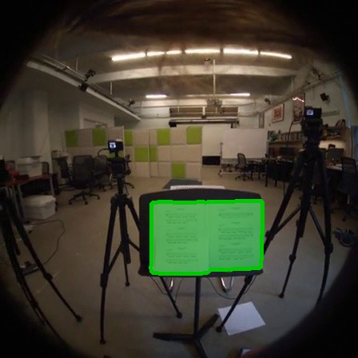
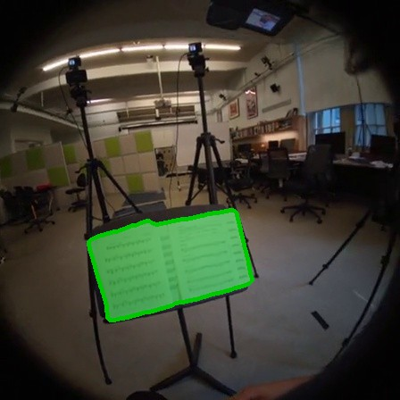
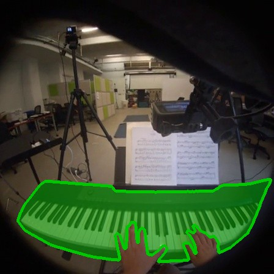
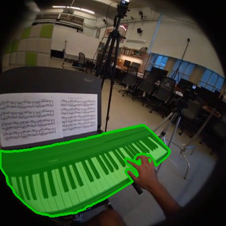
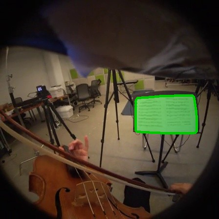
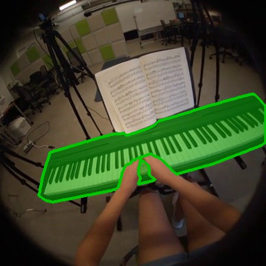
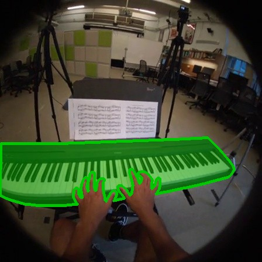

Query mask

Cross-view object correspondence identifies the same object across views. However, existing methods treat this as a frame-level matching problem, necessitating a query mask at every frame. Furthermore, without modeling temporal context, they suffer from severe ambiguity under appearance changes or occlusions. Therefore, we introduce cross-view temporal object correspondence, which requires preserving object identity across both views and time from a query mask. To address this, we propose XTrack, a streamlined framework which repurposes a pretrained video DiT with semantic and spatiotemporal priors for RGB-to-mask latent transport, jointly modeling cross-view matching and temporal tracking. However, naive video DiTs do not guarantee accurate cross-view grounding and often attend to semantically similar yet incorrect objects across views. Thus, we introduce focal cross-view attention alignment, hard negative conditioning, and local context crop strategies to ensure reliable grounding. Finally, beyond these architectural enhancements, we also tackle the lack of dense annotation by introducing a pseudo-label curation pipeline that converts sparse Ego-Exo4D annotations into dense supervision to enable effective video-level training. Our highly competitive performances validate the effectiveness of XTrack as a streamlined framework, ensuring robust temporal consistency and identity preservation.
Given a first-frame query mask in one view, the task is to recover temporally coherent masks of the same object in both views. Existing frame-level matchers must be extended with a tracker, which leads to two decoupled pipelines; both fail under temporary disappearance and viewpoint change. XTrack instead predicts masks jointly across views and time within a single video DiT.


Given a single query mask (left), XTrack predicts the object masks in both the ego and exo videos (right). Videos are played at 2× speed.










@article{xtrack2026,
title = {Repurposing Video Diffusion Transformers for Cross-View Temporal Object Correspondence},
author = {Jin, Siyoon and Chung, Dahyun and An, Honggyu and Lim, Sangbeom and Nam, Wonjin and Jung, Jaewoo and Moon, WonJun and Kim, Seungryong},
journal = {arXiv preprint},
year = {2026}
}